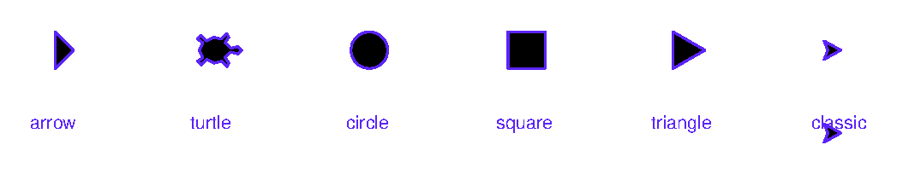
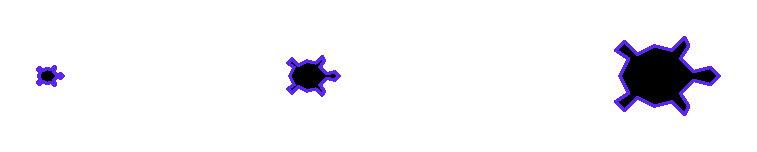
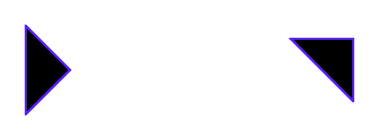

Глава 7 · Глубокое погружение в Turtle
Черепашка как графический объект
Форма, размер и наклон курсора — настройки внешнего вида, независимые от того, куда и как черепашка на самом деле движется.
До сих пор форма черепашки была для нас просто «указателем». Но у неё есть собственные настройки внешнего вида — размер и наклон — независимые от логики движения.
Встроенные формы
galereya_form.py
import turtle
screen = turtle.Screen()
screen.setup(width=560, height=180)
artist = turtle.Turtle()
artist.penup()
artist.pencolor("#5B24F9")
shapes = ["arrow", "turtle", "circle", "square", "triangle", "classic"]
x = -220
for shape_name in shapes:
artist.goto(x, 20)
artist.shape(shape_name)
artist.stamp()
artist.goto(x, -25)
artist.write(shape_name, align="center", font=("Arial", 10, "normal"))
x += 85
screen.exitonclick()Результат выполнения

galereya_form_kod.py
shapes = ["arrow", "turtle", "circle", "square", "triangle", "classic"]
for shape_name in shapes:
artist.shape(shape_name)
artist.stamp()shapesize() — размер курсора, не размер рисунка
razmer_formy.py
import turtle
screen = turtle.Screen()
screen.setup(width=420, height=220)
artist = turtle.Turtle()
artist.shape("turtle")
artist.pencolor("#5B24F9")
artist.penup()
sizes = [(0.5, -140), (1, -20), (2, 140)]
for factor, x in sizes:
artist.goto(x, 0)
artist.shapesize(factor, factor)
artist.stamp()
screen.exitonclick()Результат выполнения

razmer_formy_kod.py
artist.shape("turtle")
for factor in [0.5, 1, 2]:
artist.shapesize(factor, factor)
artist.stamp()shapesize() не меняет координаты
Увеличенная черепашка выглядит больше, но это только внешний вид курсора — все координаты, повороты и расстояния в коде остаются точно такими же, как были.
tilt() — наклон вида, а не курс движения
Здесь важно различать два похожих, но разных понятия:
| Понятие | Что означает |
|---|---|
| heading (курс) | куда черепашка ДВИЖЕТСЯ — это меняют left()/right()/setheading() |
| tilt (наклон) | как повёрнут ВИД курсора на экране — это меняет только tilt()/tiltangle() |
naklon.py
import turtle
screen = turtle.Screen()
screen.setup(width=420, height=220)
artist = turtle.Turtle()
artist.shape("arrow")
artist.shapesize(3, 3)
artist.pencolor("#5B24F9")
artist.penup()
artist.goto(-100, 0)
artist.setheading(0)
artist.stamp()
artist.goto(100, 0)
artist.tilt(45)
artist.stamp()
screen.exitonclick()Результат выполнения

naklon_kod.py
artist.shape("arrow")
artist.shapesize(3, 3)
artist.stamp() # обычный вид
artist.tilt(45) # только поворачиваем ВИД, курс движения не изменился
artist.stamp()Зачем это может понадобиться
Представьте самолётик или машинку в игре: она может ЛЕТЕТЬ строго вправо (курс фиксирован), но слегка покачиваться визуально — это и есть разница между heading и tilt. Для базовых учебных рисунков tilt() нужен редко, но полезно знать, что курс движения и внешний вид — разные вещи.
Практика: черепашка как графический объект
Модуль turtle открывает нативное окно Python — выполните локально в VS Code, PyCharm или Jupyter
Практика выполняется локально